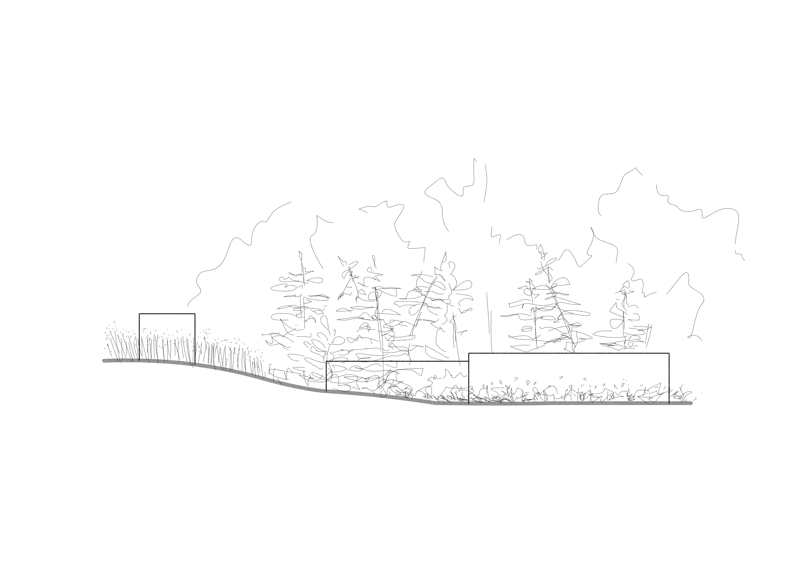
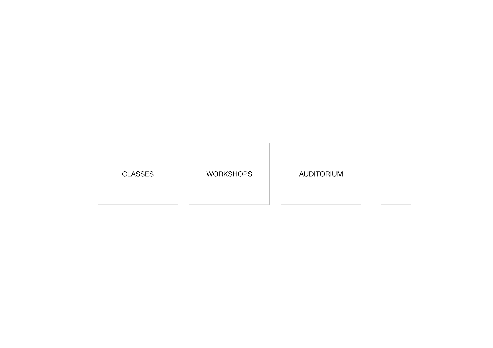

Le projet est une exploration sommaire qui tente de répondre au programme du nouveau pavillon fictif pour l'école Bauhaus en créant un bâtiment où l’enveloppe devient une surface d’expression pour ses usagers, tout en conservant un lien constant avec l'extérieur. La surface extérieur est alors tableaux et l'intérieur est espace de création, l'entre deux devient alors circulation. Le projet comprend trois pavillons distincts : le pavillon principal, celui de création, regroupent salles de classe, ateliers et auditoriums. Le deuxième pavillon a comme unique fonction la diffusion et l'archivage des travaux réalisés, et le dernier pavillon sert de dortoir pour loger professeurs et étudiants. Chaque pavillon se voit attribuer un jardin adapté à leurs besoins spécifiques.
Téléchargements Planche originale
